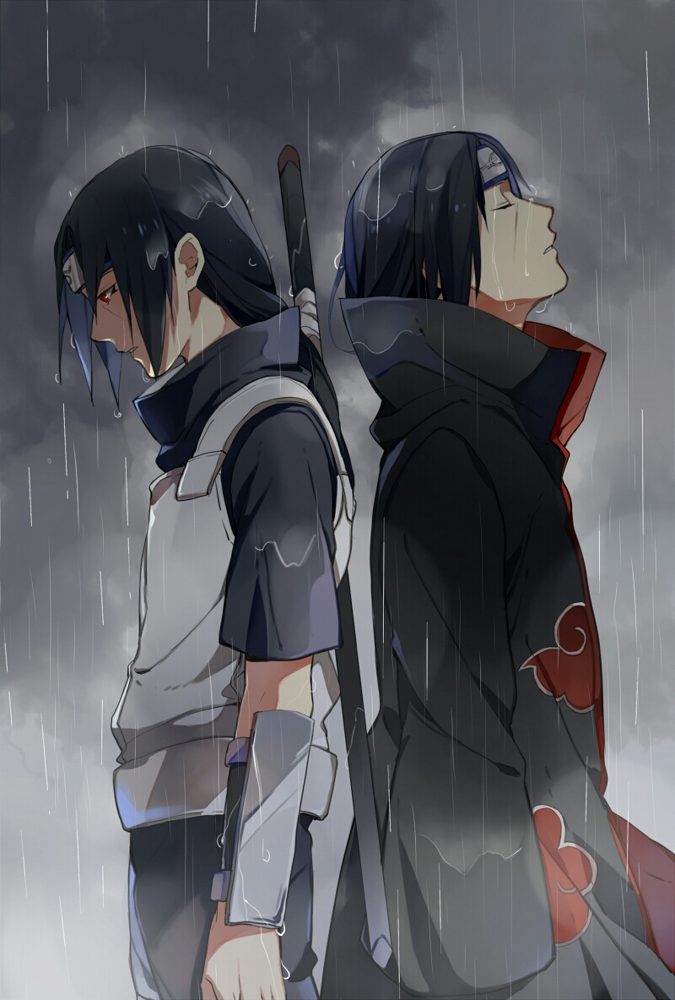
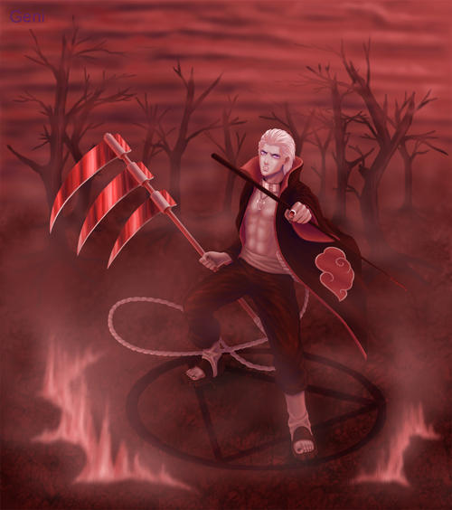

-
佩恩，由“晓”组织首领长门用轮回眼的能力所控制的六具尸体，由于长门行动不便而制造出来代替他的一切行动，主体为长门的挚友弥彦，能力来自长门，没有自我意识。
-

宇智波鼬，火之国木叶隐村宇智波一族的天才忍者，擅长使用幻术。最终在与弟弟宇智波佐助的战斗中为佐助注入瞳力后，因身体患有不治之症，体力不支而死亡。
-

飞段，“晓”成员之一，原本是川之国汤隐村的忍者，信仰邪神教，拥有不死身。曾经和角都联手击败二尾人柱力二位由木人，杀死守护忍十二士之一的地陆和猿飞阿斯玛，最终被奈良鹿丸用计活埋于鹿林的深洞里。
-
迪达拉，“晓”成员之一，土之国·岩隐村第三代土影大野木的徒弟，少年时期为了证明自己的艺术，而接受了众多恐怖袭击任务，因败于宇智波鼬而加入“晓”组织。最终在与宇智波佐助的对决中自爆身亡。